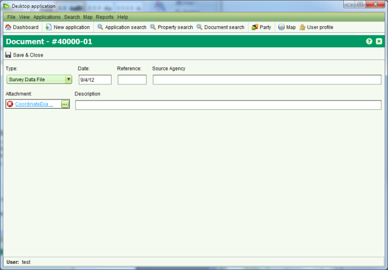

Add or Update a File Attachment on an Existing Document
The Document tab of the Application Details screen does not provide any functionality
to update document information or add/update the file attachment for an existing document. To
add or update the file attachment of an existing document you first need to locate the
document with the Document Search screen and use the Edit tool.
Edit tool.
Steps
-
-
From the Dashboard, click
 Document
search
Document
search
-
Use the search to locate the document to update using its SOLA Number or any other
relevant search criteria
-
Select the document to update in the results list and click theEdit tool to open the Document Details screen

Document Details
-
-
Edit the document information and/or change the file attachment as required
-
Click
 Save & Close to save the
changes.
Save & Close to save the
changes.
Notes
-
It is not possible to update the file attachment for Power of Attorney and Standard
Memorandum documents. Ensure you link these documents with the appropriate attachments when
the documents are added to the application.